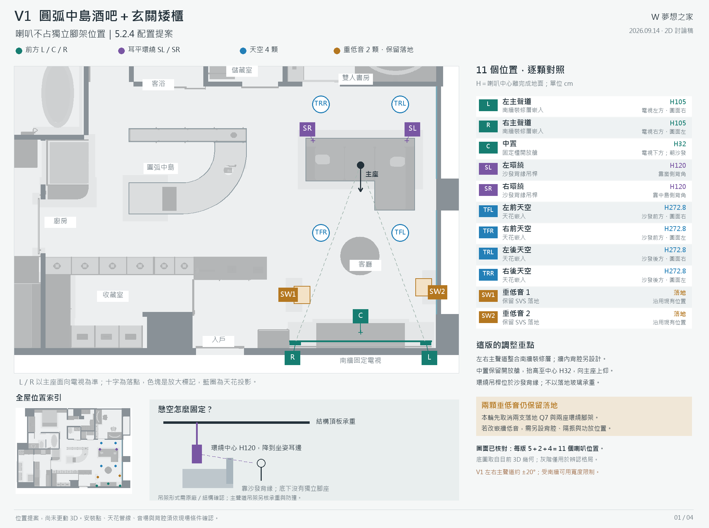
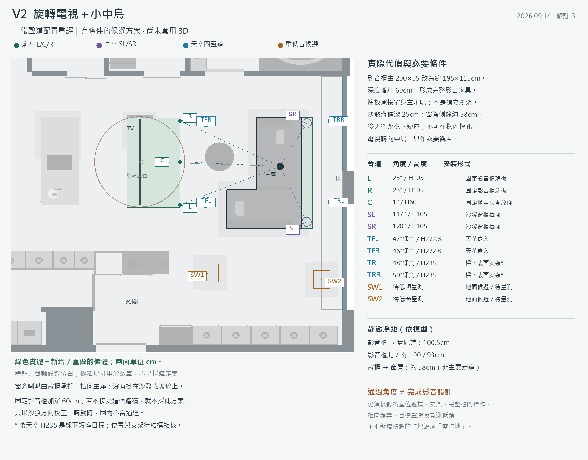
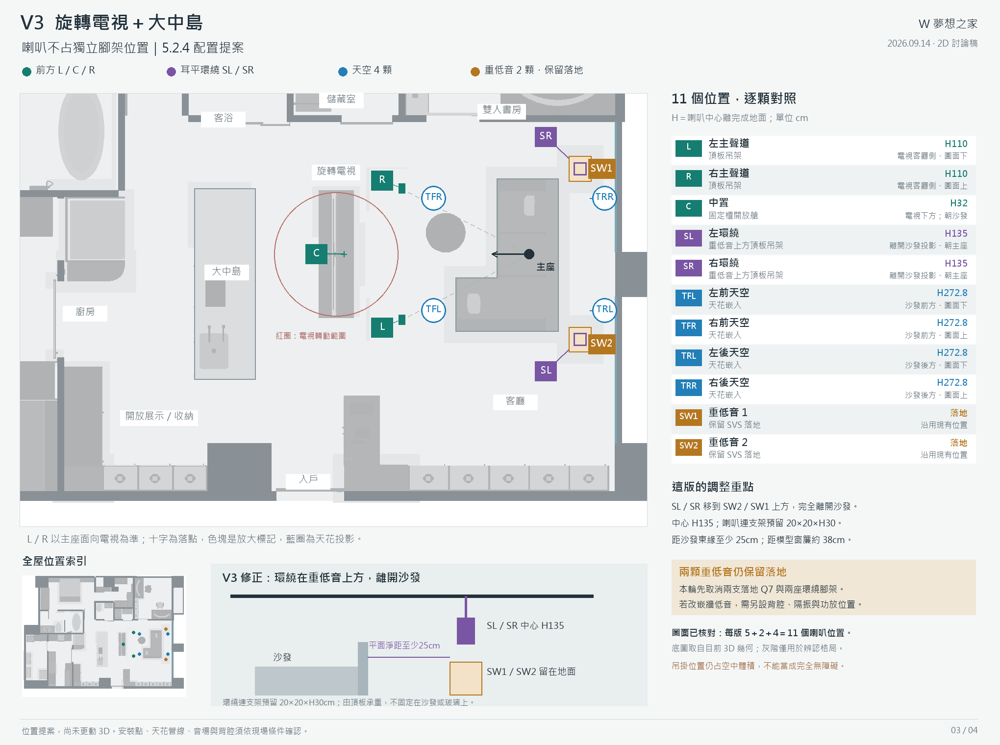
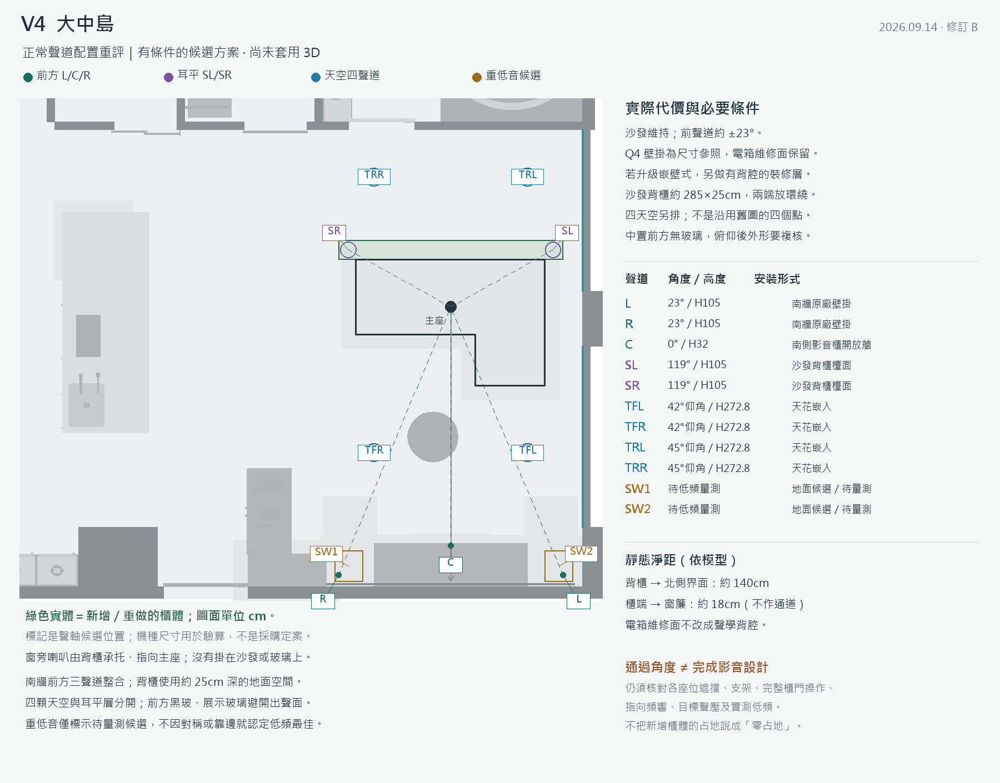

← 回到 3D 設計每個版本，每一顆喇叭的位置
四張 2D 圖各有 11 個位置：左右主聲道＋中置＋兩顆環繞＋四顆天空＋兩顆重低音。
點圖可開啟原尺寸；這是待討論的擺位提案，現有 3D 尚未更換設備。

下載 V1 PNG下載可放大 SVG
下載 V2 PNG下載可放大 SVG
下載 V3 PNG下載可放大 SVG
下載 V4 PNG下載可放大 SVG
全部 44 個位置與高度表
座標沿目前模型：X 向圖面右、Y 向圖面下；單位 cm。H 為中心高度，SW 的 0 表示底部落地。符號有放大，十字落點才是配置中心。
| 版本 | 聲道 | X, Y | H | 安裝 | 位置 |
|---|
| V1 | L 左主聲道 | 1062, 944 | 105 | 南牆裝修層嵌入 | 電視左方・圖面右 |
| V1 | R 右主聲道 | 773, 944 | 105 | 南牆裝修層嵌入 | 電視右方・圖面左 |
| V1 | C 中置 | 917.5, 920 | 32 | 固定櫃開放艙 | 電視下方；朝沙發 |
| V1 | SL 左環繞 | 1020, 495 | 120 | 沙發背緣吊桿 | 靠窗側背角 |
| V1 | SR 右環繞 | 812, 495 | 120 | 沙發背緣吊桿 | 靠中島側背角 |
| V1 | TFL 左前天空 | 1005, 700 | 272.8 | 天花嵌入 | 沙發前方・圖面右 |
| V1 | TFR 右前天空 | 830, 700 | 272.8 | 天花嵌入 | 沙發前方・圖面左 |
| V1 | TRL 左後天空 | 1005, 415 | 272.8 | 天花嵌入 | 沙發後方・圖面右 |
| V1 | TRR 右後天空 | 830, 415 | 272.8 | 天花嵌入 | 沙發後方・圖面左 |
| V1 | SW1 重低音 1 | 788, 837 | 0 | 保留 SVS 落地 | 沿用現有位置 |
| V1 | SW2 重低音 2 | 1057, 820 | 0 | 保留 SVS 落地 | 沿用現有位置 |
| V2 | L 左主聲道 | 750, 663 | 110 | 頂板吊架 | 電視客廳側・圖面下 |
| V2 | R 右主聲道 | 750, 457 | 110 | 頂板吊架 | 電視客廳側・圖面上 |
| V2 | C 中置 | 659.35, 560 | 32 | 固定櫃開放艙 | 電視下方；朝沙發 |
| V2 | SL 左環繞 | 986, 686 | 120 | 沙發背緣吊桿 | 沙發後方・圖面下 |
| V2 | SR 右環繞 | 986, 480 | 120 | 沙發背緣吊桿 | 沙發後方・圖面上 |
| V2 | TFL 左前天空 | 800, 648 | 272.8 | 天花嵌入 | 沙發前方・圖面下 |
| V2 | TFR 右前天空 | 800, 472 | 272.8 | 天花嵌入 | 沙發前方・圖面上 |
| V2 | TRL 左後天空 | 1050, 648 | 272.8 | 天花嵌入 | 沙發後方・圖面下 |
| V2 | TRR 右後天空 | 1050, 472 | 272.8 | 天花嵌入 | 沙發後方・圖面上 |
| V2 | SW1 重低音 1 | 799, 800 | 0 | 保留 SVS 落地 | 沿用現有位置 |
| V2 | SW2 重低音 2 | 1040, 814 | 0 | 保留 SVS 落地 | 沿用現有位置 |
| V3 | L 左主聲道 | 750, 686 | 110 | 頂板吊架 | 電視客廳側・圖面下 |
| V3 | R 右主聲道 | 750, 480 | 110 | 頂板吊架 | 電視客廳側・圖面上 |
| V3 | C 中置 | 659.35, 583 | 32 | 固定櫃開放艙 | 電視下方；朝沙發 |
| V3 | SL 左環繞 | 1030, 717 | 135 | 重低音上方頂板吊架 | 離開沙發投影・朝主座 |
| V3 | SR 右環繞 | 1030, 449 | 135 | 重低音上方頂板吊架 | 離開沙發投影・朝主座 |
| V3 | TFL 左前天空 | 800, 671 | 272.8 | 天花嵌入 | 沙發前方・圖面下 |
| V3 | TFR 右前天空 | 800, 495 | 272.8 | 天花嵌入 | 沙發前方・圖面上 |
| V3 | TRL 左後天空 | 1050, 671 | 272.8 | 天花嵌入 | 沙發後方・圖面下 |
| V3 | TRR 右後天空 | 1050, 495 | 272.8 | 天花嵌入 | 沙發後方・圖面上 |
| V3 | SW1 重低音 1 | 1030, 449 | 0 | 保留 SVS 落地 | 沿用現有位置 |
| V3 | SW2 重低音 2 | 1030, 717 | 0 | 保留 SVS 落地 | 沿用現有位置 |
| V4 | L 左主聲道 | 1062, 944 | 105 | 南牆裝修層嵌入 | 電視左方・圖面右 |
| V4 | R 右主聲道 | 773, 944 | 105 | 南牆裝修層嵌入 | 電視右方・圖面左 |
| V4 | C 中置 | 917.5, 920 | 32 | 固定櫃開放艙 | 電視下方；朝沙發 |
| V4 | SL 左環繞 | 1020, 545 | 120 | 沙發背緣吊桿 | 靠窗側背角 |
| V4 | SR 右環繞 | 812, 545 | 120 | 沙發背緣吊桿 | 靠中島側背角 |
| V4 | TFL 左前天空 | 1005, 775 | 272.8 | 天花嵌入 | 沙發前方・圖面右 |
| V4 | TFR 右前天空 | 830, 775 | 272.8 | 天花嵌入 | 沙發前方・圖面左 |
| V4 | TRL 左後天空 | 1005, 425 | 272.8 | 天花嵌入 | 沙發後方・圖面右 |
| V4 | TRR 右後天空 | 830, 425 | 272.8 | 天花嵌入 | 沙發後方・圖面左 |
| V4 | SW1 重低音 1 | 788, 929 | 0 | 保留 SVS 落地 | 沿用現有位置 |
| V4 | SW2 重低音 2 | 1055, 929 | 0 | 保留 SVS 落地 | 沿用現有位置 |